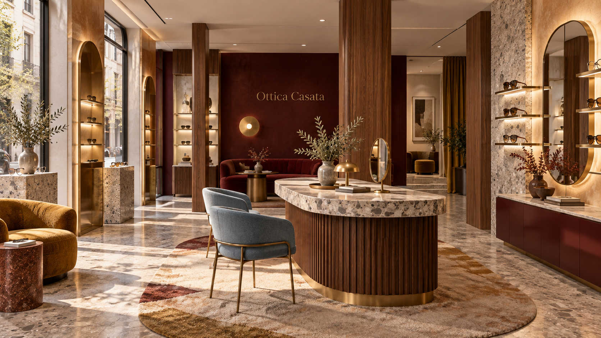
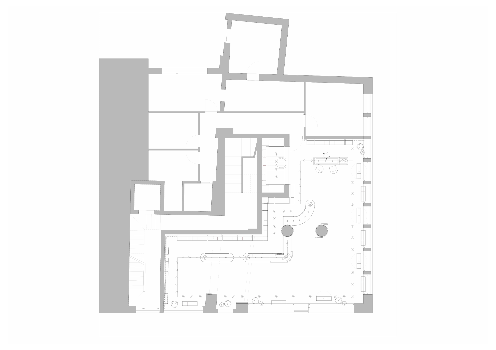

Entrare per vedere. Restare per ricordare.
La seconda moodboard diventa un interno prezioso e misurato: una boutique ottica con la calma di un appartamento milanese e la precisione di un atelier.


La pianta diventa una sequenza teatrale.
Il perimetro e le aperture del documento sono il punto di partenza. Il progetto luxury introduce un asse più domestico: soglia raccolta, collezione centrale, salotto di consulenza e un atelier arretrato protetto da filtri e riflessi.
Luxury, senza diventare ostentazione.
La montatura è l’oggetto. Lo spazio ne costruisce il valore.
Ceppo di Gré, teak, blu polvere, senape e bordeaux costruiscono una scenografia adulta. La luce non illumina tutto: sceglie cosa far vedere. Il cliente percepisce cura, rarità e tempo dedicato.
Il lusso è una questione di proporzioni.
Una boutique, non una superficie vendita.
La proposta luxury non chiede di imitare Milano o Lisbona. Usa quei codici per costruire una firma propria: una piccola destinazione nel centro di Villafranca, riconoscibile anche a occhi chiusi.